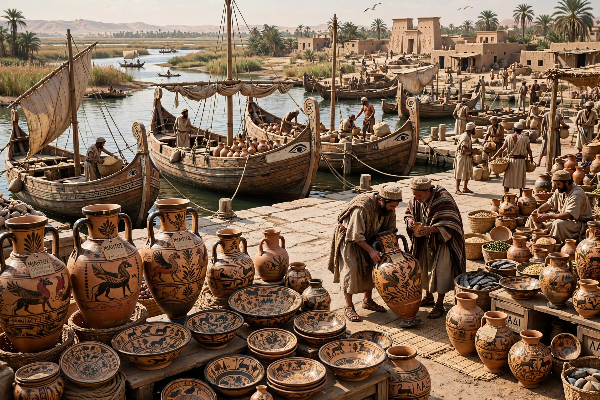

From Wikipedia, the free encyclopedia
| Location | Nile Delta, Egypt (near modern Kom Gi'eif) |
|---|---|
| Founded | c. 7th century BCE |
| Type | Greek trading colony (emporion) |
| Excavated | 1884–85 by Flinders Petrie |

Naucratis or Naukratis (Greek: Ναύκρατις, "Naval Victory") was a city and trading post in ancient Egypt, located on the Canopic branch of the Nile in the western Delta. It was the first and, for much of its early history, the only permanent Greek colony in Egypt, and the principal channel of trade and cultural exchange between Greece and Egypt during the Archaic and Classical periods.
Greek merchants settled at Naucratis probably by the later 7th century BCE, under the Saite pharaohs. Herodotus reports that Pharaoh Amasis (570–526 BCE) granted the Greeks the city as an exclusive trading port and permitted them to build sanctuaries, the most famous being the large communal temple called the Hellenion, maintained by nine East Greek cities. Individual cities such as Miletus, Samos, and Aegina built their own temples. The settlement flourished through the Persian period and into Hellenistic times before declining after the Roman era.
The site was rediscovered and excavated by Flinders Petrie in 1884–85, then by Ernest Gardner and David Hogarth. Excavations uncovered temples, a faience scarab factory, and large quantities of East Greek pottery, which made Naucratis crucial for dating Archaic Greek pottery chronology. The poet Sappho's brother Charaxos was said to have traded wine at Naucratis, and the city was also associated with the courtesan Rhodopis.